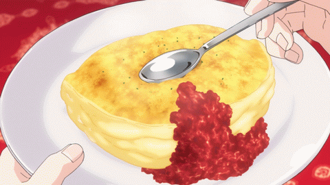

Souffle Omelette

You've never made an omelette like this before, trust me. Unlike your standard egg dish you add a LOT of air into these eggs by beating them with an electric mixer. This results in a super fluffy omelette that practically melts in your mouth. Are you drooling yet?
Ingredients:
- 3 large eggs
- 1 oz (25g)mature Cheddar,finely grated
- 1 oz (25g)parmesan(Parmigiano Reggiano)finely grated
- 1 oz (25g)gruyere,finely grated
- 1 heaped tablespoon finely snipped chives
- 1/2 oz (10g) butter
- salt and freshly milled black pepper
Steps to make it:
- First separate the eggs – yolks into a small bowl and whites into a squeaky-clean large bowl; it helps if you separate the whites singly into a cup first before adding them to the bowl, then if one breaks, it won't ruin the rest.
- Now beat the egg yolks with a fork, seasoning well with salt and pepper. Next put the pan on to a low heat to warm through. While that's happening, whisk the egg whites with either an electric hand whisk or a balloon whisk, until they form soft peaks. You can watch how to do this in our Perfect Egg Whites, Cookery School Video on this page. Next add the butter to the pan and turn the heat up.
- Then, using a large metal spoon, quickly fold the egg yolks into the egg whites, adding the Cheddar, half the Parmesan and the chives at the same time. Then, when the butter is foaming, pile the whole lot into the pan and give it a good hefty shake to even it out. Now let the omelette cook for 1 minute exactly. Then slide a palette knife round the edges to loosen it, sprinkle the grated Gruyère all over the surface and whack the omelette under the grill, about 4 inches (10 cm) from the heat. Let it cook for 1 more minute, until the cheese is melted and tinged golden.
- Next, remove the pan from the heat, then slide the palette knife round the edge again. Take the pan to the warmed plate, then ease one half of the omelette over the other and tilt the whole lot out on to the plate.
- Scatter the rest of the Parmesan all over and serve immediately.
Home Page